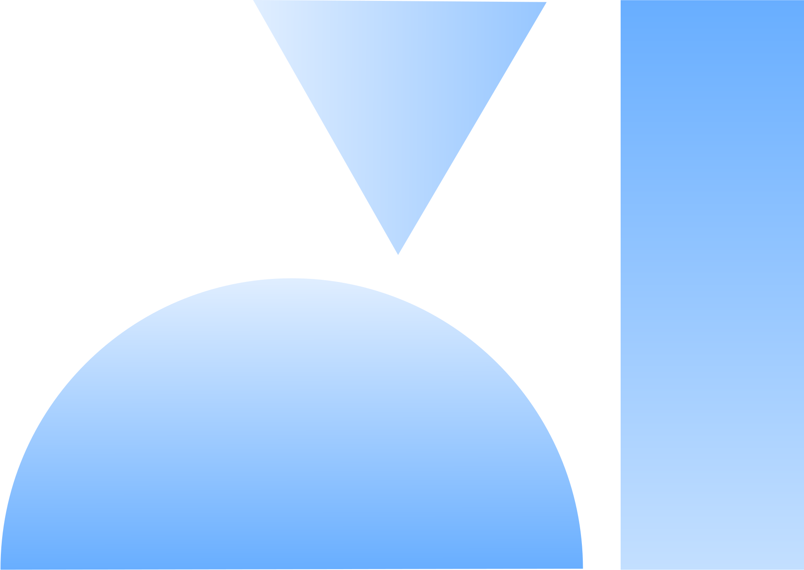
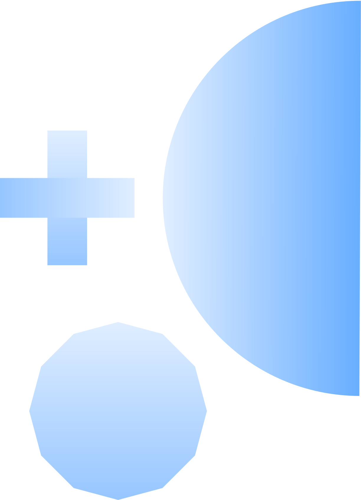

Understand
Make sense of unstructured policy documents, claims evidence, and complex financial streams at scale.
Fast. Explainable. Audit-Ready.
Every automated path must guarantee enterprise-grade security, full audit-readiness, deterministic explainability, and 100% regulatory compliance, making complete decision lineage a prerequisite for deployment.

We reimagine how financial institutions operate by unifying underwriters, claims handlers, and AI agents across the financial value chain.
Make sense of unstructured policy documents, claims evidence, and complex financial streams at scale.
Orchestrate risk analysts, compliance teams, and specialized agentic workflows.
Automate underwriting intake, claims triage, and dispute resolution with confidence.
Ensure zero-trust data residency, strict regulatory compliance, and immutable decision audit trails.
Six AI-powered workflows that continuously build, secure, deploy, monitor, and improve software delivery.
Operations, servicing, and compliance teams spent between 15 and 45 minutes manually retrieving governing policy clauses and records.
Searce engineered a permission-aware enterprise context layer over contract estates with 99.9% PII isolation.
Slashed document search times to under 30 seconds with 93% accuracy in multi-step reasoning and precise citations.

Rebuilds claims, underwriting, policy servicing, and loan origination workflows, replacing legacy operational tooling above systems of record.
Redesigns underwriter, claims handler, and analyst roles around agentic tools, measuring ROI by completed decisions rather than software logins.
Delivers deterministic guardrails, model evaluation suites, and automated audit logs required for risk committee and regulatory approvals.
Constructs secure, high-concurrency data foundations and context layers enabling permission-aware semantic search across vast policy and treaty archives.
Outcome Discovery on one named process from the list above. Two to four weeks, fixed price, ending in a locked metric baseline and a ranked opportunity matrix. Most financial services engagements start with underwriting intake, claims triage, or policy document retrieval due to high case volumes and clear metric tracking.
Pick a single process from the list above. We scope the systems it touches, the teams who run it, and the metric that defines it today.
Our engineers sit inside the workflow, trace where time and value leak, and instrument the baseline against your policy administration, claims, and core banking systems of record.
A locked metric baseline and a ranked opportunity matrix: which interventions move the metric, in what order, and what each is worth.
Bring us a problem. We'll come back inside 24 hours.